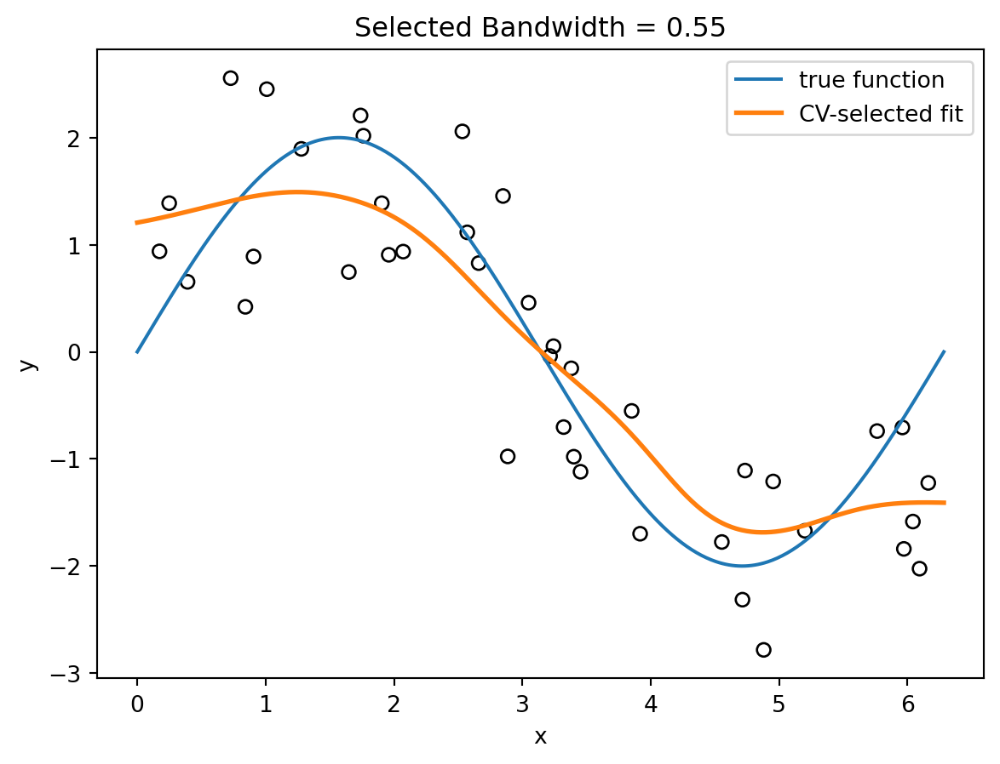
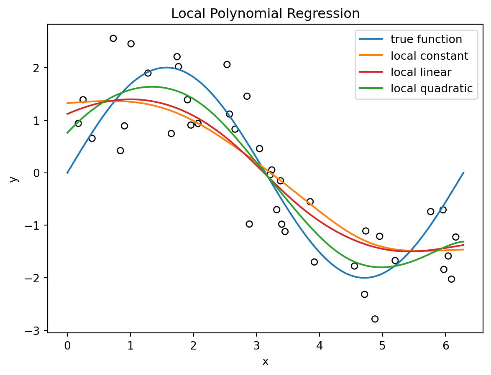
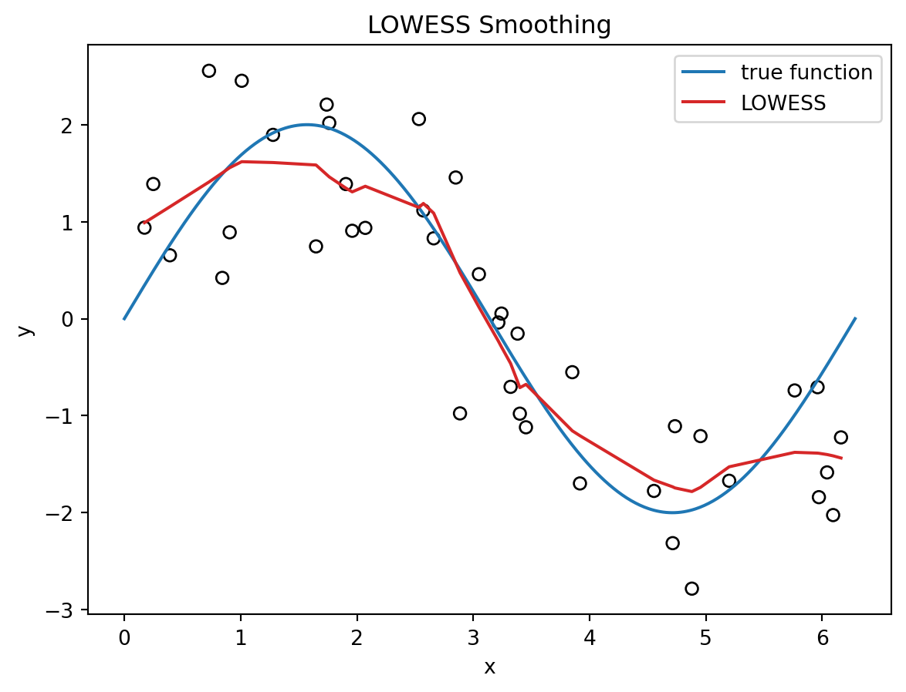

Kernel smoothing is a family of nonparametric methods for estimating smooth functions from data. Like KNN, it is based on local information: nearby observations should have more influence than distant observations.
The difference is that KNN uses a hard neighbor set, while kernel methods usually use smoothly decaying weights.
Note
This chapter focuses on kernel smoothing, including kernel density estimation and kernel regression. It does not cover kernel machines such as support vector machines or kernel ridge regression. These methods also use kernel functions, but their modeling goals are different.
Unlike many methods discussed earlier in this book, classical kernel smoothing is not fully integrated into the standard sklearn estimator framework. Although sklearn provides some related tools, such as KernelDensity, it does not provide a standard estimator for classical kernel regression.
In this chapter, we will use KernelReg from statsmodels to fit kernel regression models. For readers interested in the implementation details, we also include an optional section on building a custom regressor using the sklearn API and implementing the estimator from scratch. The goal is not only to understand how kernel regression works, but also to become familiar with practical tools from statsmodels and the basic structure of custom sklearn estimators.
8.1 From KNN to Kernel Weights
KNN regression predicts by averaging the \(K\) nearest responses. This gives equal weight to all \(K\) nearest neighbors and zero weight to every other observation. In other words, KNN is a weighted average with hard weights:
Kernel smoothing keeps the same local-averaging idea but changes the weights. Instead of deciding whether a point is inside or outside the neighbor set, it assigns a smooth weight based on distance:
Here \(K(\cdot)\) is the kernel function and \(h>0\) is the bandwidth.
A kernel function converts distance into weight. It gives larger values to points near zero and smaller values to points far from zero. For density estimation, we usually require
KNN fits are often discontinuous because the neighbor set can change abruptly as \(x_0\) moves. Kernel smoothers, especially with smooth kernels such as the Gaussian kernel, usually produce smooth fitted curves.
In practice, the exact kernel shape is usually less important than the bandwidth. The bandwidth controls the main bias–variance tradeoff.
8.2 Kernel Density Estimation
Suppose a random variable has an unknown density function \(f(x)\). Given a sample \(\qty{x_1,\ldots,x_n}\), we would like to estimate this density from the observed data.
Kernel density estimation (KDE) is a nonparametric method for doing so. The kernel density estimator is
The interpretation is simple: place a small smooth bump at every observation, add the bumps together, and divide by \(n\).
The kernel function determines the shape of each bump, while the bandwidth \(h\) controls its width. As we will see, the bandwidth is usually the most important tuning parameter in kernel density estimation.
We demonstrate the idea with the following example. We use two normal distributions to generate a simple dataset. The dataset is x, and its histogram is displayed below.
A histogram estimates density by counting observations inside fixed bins. Kernel density estimation generalizes this idea by replacing fixed bins with a moving window.
The uniform kernel estimator is itself a valid kernel density estimator. Histograms and uniform KDE are closely related: histograms use fixed bins, while uniform KDE centers a window at each evaluation point and moves that window continuously across the domain.
This can be viewed as a moving histogram. Instead of counting observations in fixed bins, we center a window of width \(h\) at the evaluation point \(x\) and count the observations that fall inside the window. The value h=0.35 is chosen solely for illustration. In practice, selecting an appropriate bandwidth is an important problem and often requires careful study.
x_grid = np.linspace(x.min() -1, x.max() +1, 500)h =0.35counts = [np.mean((x >= x0 - h /2) & (x <= x0 + h /2)) / h for x0 in x_grid]plt.hist(x, bins=20, density=True, alpha=0.35, edgecolor="black")plt.plot(x_grid, counts, color="C1", linewidth=2, label="uniform kernel")plt.xlabel("x")plt.ylabel("density")plt.title("Uniform Kernel Density Estimate")plt.legend();
8.2.2 Gaussian KDE
The uniform kernel gives equal weight to all observations inside the window and zero weight to observations outside. A Gaussian kernel uses a smoother weighting scheme in which nearby observations receive more weight than distant observations.
The Gaussian kernel is
\[
K(u)=\frac{1}{\sqrt{2\pi}}
e^{-u^2/2}.
\]
Substituting this kernel into the kernel density estimator gives
This estimator can be interpreted as placing a small Gaussian density centered at each observation and then summing the contributions from all observations. The bandwidth \(h\) controls the width of these Gaussian curves.
In practice, kernel density estimation is usually performed using software rather than by evaluating the formula directly. KernelDensity from sklearn.neighbors provides an implementation of KDE with several kernel choices, including the Gaussian kernel.
As with most sklearn estimators, KernelDensity expects a 2D predictor matrix. Therefore the 1D array x is reshaped to an \(n\times 1\) matrix before fitting the model.
The method .score_samples() returns the logarithm of the estimated density rather than the density itself. This is done for numerical stability. Applying np.exp() converts the values back to the density scale.
The expectation of KDE is a convolution of the true density and the kernel. Therefore KDE estimates a smoothed version of the underlying density.
Since \[
f(x-hu)=f(x)-huf'(x)+\frac12h^2u^2f''(x)+O(h^3),
\] after plugged in, we have \[
\mathrm{bias}=\Exp[\hat f(x)]-f(x)=O(h^2).
\]
If \(h\) is small and \(f\) is smooth, then \(f(x-hu)\) is close to \(f(x)\). Since \(\int K(u)\,du=1\),
\[
\Exp[\hat f(x)]
\approx
f(x).
\]
More general, More generally,
\[
\Exp[\hat f(x)]
=
\int
K(u)f(x-hu)\,du,
\] which is a convolution of the true density and the kernel. Therefore the expected KDE is a smoothed version of the underlying density.
This calculation shows that a sufficiently small bandwidth can reduce the bias of the KDE. However, making the bandwidth too small increases variance. A useful bandwidth must therefore balance bias and variance.
8.2.4 Bias and Variance of KDE
The expectation calculation above suggests that KDE becomes more accurate when the bandwidth is small. However, reducing the bandwidth also increases variability.
Under suitable smoothness assumptions, it can be shown that
The first term decreases as the bandwidth becomes smaller, while the second term increases. Bandwidth selection therefore involves a bias-variance tradeoff.
NoteThe Practical Impact of Bandwidth
The bias-variance tradeoff directly dictates the visual fidelity of the density estimate:
Small Bandwidth (High Variance/Low Bias): The estimate is highly flexible and captures local fluctuations, but it often produces spurious “noise” peaks that are artifacts of the specific sample rather than the true underlying distribution.
Large Bandwidth (Low Variance/High Bias): The estimate is overly smooth. While it effectively reduces noise, it often masks essential structural features such as skewness or multiple modes.
As a result, different bandwidth values can lead to substantially different density estimates, even when the same kernel function is used.
In practice, the choice of bandwidth is usually much more important than the choice of kernel. Therefore, bandwidth selection is the central tuning problem in kernel density estimation.
8.2.5 Rule-of-Thumb Bandwidth Selection for KDE
Numerous bandwidth selection methods have been proposed.
The asymptotic bias-variance analysis above implies that an optimal bandwidth should decrease roughly at the rate
\[
h
=
O(n^{-1/5}).
\]
This explains why many rule-of-thumb bandwidth formulas contain the factor \(n^{-1/5}\).
For a Gaussian kernel, a common normal-reference rule-of-thumb bandwidth is
\[
h
=
1.06\,\hat\sigma\,n^{-1/5}.
\]
This formula is derived under the assumption that the underlying density is approximately Gaussian. It is sometimes called Scott’s normal-reference rule.
The following Python code implements this rule.
h =1.06* np.std(x, ddof=1) *len(x) ** (-1/5)h
np.float64(0.40897130738005494)
These formulas are computationally inexpensive and often provide reasonable starting values. However, they are derived under idealized assumptions and may not perform well when the underlying density deviates substantially from those assumptions.
NoteGeneralize to Kernel regression
Although Silverman’s rule was originally developed for kernel density estimation, it is sometimes used as a simple starting value for kernel regression as well.
However, bandwidth selection is generally more challenging in regression because the optimal bandwidth depends not only on the distribution of the predictors but also on the shape of the regression function and the amount of noise in the response. For this reason, cross-validation is usually preferred for kernel regression.
8.2.6 Bandwidth Selection by Visual Inspection
Bandwidth selection for KDE can be performed using cross-validation, plug-in methods, or other data-driven procedures.
However, KDE is often used for exploratory visualization. In such settings, practitioners frequently inspect several nearby bandwidth values visually to assess the stability of the estimated density.
Code
bandwidths = [0.1, 0.3, 0.6]plt.hist(x, bins=20, density=True, alpha=0.25, edgecolor="black")for bw in bandwidths: kde = KernelDensity(kernel="gaussian", bandwidth=bw) kde.fit(x.reshape(-1, 1)) density = np.exp(kde.score_samples(x_grid.reshape(-1, 1))) plt.plot(x_grid, density, linewidth=2, label=f"h={bw}")plt.xlabel("x")plt.ylabel("density")plt.title("Choosing Bandwidth by Visual Inspection")plt.legend();
The figure compares KDE estimates with several bandwidth values.
With h=0.1, the density estimate contains many small peaks and valleys. These fluctuations are likely caused by sampling noise rather than genuine features of the underlying distribution.
With h=0.6, the estimate is much smoother, but some local features have disappeared.
With h=0.3, the estimate preserves the main shape of the distribution while avoiding excessive noise.
A common visual strategy is to choose the smallest bandwidth that removes obvious noise while preserving important features such as peaks, valleys, skewness, or multiple modes.
8.3 Kernel Regression
Kernel regression estimates
\[
f(x)=\Exp[Y\mid X=x].
\]
The most common kernel regression estimator is the Nadaraya-Watson estimator.
Definition 8.1 (Nadaraya-Watson estimator) Given training data \((x_i,y_i)\), the Nadaraya-Watson estimator is
Because the Nadaraya-Watson estimator normalizes the weights, the constant \(1/(h\sqrt{2\pi})\) cancels out. Therefore, for regression weights, it is enough to use
The following example compares a KNN regression curve with a Gaussian kernel regression curve on the same data.
We first generate a one-feature dataset and a grid for plotting predictions. The data are generated from \[
y=2\sin(x)+\varepsilon,
\] so the true regression function is \(f(x)=2\sin(x)\). We will use this function as a reference when evaluating the fitted models.
For comparison we fit a KNN regressor with n_neighbors=10. Since the purpose is to show the idea, for simplicity we do not split train-test or tune \(K\).
The KNN fit is piecewise constant because the prediction is the average of a fixed set of nearest neighbors. As the target point moves, the neighbor set may suddenly change, causing abrupt jumps in the fitted curve.
The Nadaraya-Watson estimator fit changes smoothly because every observation contributes to the prediction. The weights vary continuously with distance, producing a smooth estimate of the regression function.
8.3.1.1 Understanding KernelReg
The API of KernelReg from statsmodels differs substantially from the APIs used by most sklearn estimators, so we briefly explain the most important arguments and methods.
Unlike most sklearn estimators, KernelReg does not have a separate training step. The training data are supplied when the object is created, and the fit() method is used to evaluate the fitted regression function at new points. In other words, y_hat, _ = kr.fit(X) performs prediction at the input locations X.
The first returned value is the estimated conditional mean.
The second returned value contains estimated marginal effects.
In this chapter, we only use the fitted values, so the marginal effects are discarded by assigning them to _.
The model is initialized using endog=y and exog=X.
endog: endogenous variable
exog: exogenous variable
These terms come from econometrics. In a statistical learning context, you can simply think of them as endog=y and exog=X.
reg_type="lc" specifies the regression estimator.
"lc" stands for local constant regression, which corresponds to the Nadaraya-Watson estimator introduced earlier.
"ll" stands for local linear regression.
The default is "ll".
bw specifies the bandwidth.
It can be supplied directly as a numeric value, as in this example.
Alternatively, setting bw="cv_ls" instructs KernelReg to select the bandwidth automatically using least-squares cross-validation.
var_type specifies the type of each predictor variable:
"c": continuous
"u": unordered discrete
"o": ordered discrete
var_type="c" indicates that the predictor is continuous. For multiple predictors, var_type should contain one character for each predictor. For example, "ccc" indicates three continuous predictors.
8.3.2 Local Averaging at One Target Point
The key idea of kernel regression is local weighted averaging. In this section we use the previous example to visualize this behavior.
At a target point \(x_0\), observations closer to \(x_0\) receive larger kernel weights. Recall that with a Gaussian kernel and bandwidth \(h=0.25\),
The Nadaraya-Watson estimate at \(x_0\) is the weighted average
\[
\hat f(x_0)
=\sum_{i=1}^nw_i(x_0)y_i,\quad\text{ where }\quad w_i(x_0)=\frac{K_h(x_0,x_i)}{\sum_{j=1}^nK_h(x_0,x_j)}.
\]
We first compute the kernel weights for the target point \(x_0=3\). Here, raw_weights contains weights proportional to the Gaussian kernel weights. They have not yet been normalized to sum to one.
We then use the raw weights to determine the size of each plotted point so that larger points correspond to larger kernel weights.
point_sizes =200* raw_weights / raw_weights.max()
We can now plot the data together with the fitted curve, using the assigned point sizes to represent the kernel weights.
import matplotlib.pyplot as pltplt.scatter(X, y, s=point_sizes, facecolors="none", edgecolors="black")plt.plot(X_grid, 2* np.sin(X_grid), color="C0", label="true function")plt.plot(X_grid, y_kernel, color="C1", label="kernel regression")plt.scatter([x0], [fhat_x0], color="red", s=80, zorder=3, label=r"$\hat f(x_0)$")plt.xlabel("x")plt.ylabel("y")plt.title("Kernel Weights Around a Target Point")plt.legend();
1
We specifically plot the estimated point.
The circle sizes are proportional to the kernel weights. Points near \(x_0\) receive larger weights and therefore have a greater influence on the local average. Points farther away receive smaller weights and contribute less to the estimate.
As the bandwidth increases, variance decreases but bias increases. Choosing an appropriate bandwidth therefore requires balancing these two sources of error.
In practice, bandwidth selection is itself a statistical problem. We next introduce a simple rule-of-thumb that provides a reasonable starting value for the bandwidth.
8.3.4 Bandwidth Selection by Cross-Validation
Rule-of-thumb methods are fast and easy to use, but they rely on assumptions that may not hold in practice. Cross-validation provides a more data-driven approach to bandwidth selection.
KernelReg from statsmodels can automatically perform cross-validation to search for the best bandwidth if the argument bw="cv_ls" is used. In this case, it performs leave-one-out cross-validation and selects the bandwidth that minimizes the least-squares prediction error. After the model is initialized, the cross-validation will be automatically performed, and you may directly check the best bandwidth by checking kr.bw.
from statsmodels.nonparametric.kernel_regression import KernelRegkr = KernelReg(endog=y, exog=X, var_type="c", reg_type="lc", bw="cv_ls")kr.bw
array([0.53263357])
With the selected bandwidth, we can plot the fitted curve.
The basic Nadaraya-Watson estimator is a local constant estimator. It can be extended in several directions. Two common extensions are local linear regression and LOWESS.
8.4.1 Local Linear Regression
Around each target point \(x_0\), local constant regression fits a weighted constant. Local linear regression instead fits a weighted line: \[
\min_{\beta_0,\beta_1}
\sum_{i=1}^n
K_h(x_0,x_i)
\left[
y_i-\beta_0-\beta_1(x_i-x_0)
\right]^2.
\]
The fitted value at \(x_0\) is the fitted intercept:
\[
\hat f(x_0)=\hat\beta_0.
\]
The statsmodels implementation KernelReg supports both local constant and local linear kernel regression through the argument reg_type. Use reg_type="lc" for local constant regression and reg_type="ll" for local linear regression.
from statsmodels.nonparametric.kernel_regression import KernelReg# Local constant regressionkr_lc = KernelReg(endog=y, exog=X, var_type="c", reg_type="lc", bw=[0.4])y_lc, _ = kr_lc.fit(X_grid)# Local linear regressionkr_ll = KernelReg(endog=y, exog=X, var_type="c", reg_type="ll", bw=[0.4])y_ll, _ = kr_ll.fit(X_grid)
Here var_type="c" means that the predictor is continuous. The bandwidth bw controls the amount of smoothing.
plt.scatter(X, y, s=35, facecolors="none", edgecolors="black")plt.plot(X_grid, 2* np.sin(X_grid), color="C0", label="true function")plt.plot(X_grid, y_lc, color="C1", label="local constant")plt.plot(X_grid, y_ll, color="C2", label="local linear")plt.xlabel("x")plt.ylabel("y")plt.title("Local Constant versus Local Linear Smoothing")plt.legend();

Local linear regression often improves boundary behavior. Near the edge of the data, a local average can be biased because there are observations on only one side of the target point. A local line can adjust for the slope.
NoteBoundary bias
Local averaging can be biased near the boundary of the data.
Local linear regression reduces this problem by fitting a local trend instead of a local constant.
8.4.2 Local Polynomial Regression
Local linear regression is a special case of local polynomial regression. At each target point \(x_0\), local polynomial regression fits
Higher-degree local polynomials can reduce bias, but they can also become unstable when the bandwidth is too small or the local sample size is limited.
In practice, local constant and local linear smoothing are the most commonly used versions. Local quadratic or higher-degree methods are possible, but they are less commonly used in introductory applications.
8.4.3 LOWESS
LOWESS, short for locally weighted scatterplot smoothing, is a local regression method that combines local linear fitting with distance-based weights.
For a target point \(x_0\), LOWESS first selects a neighborhood around \(x_0\). The neighborhood size is controlled by a span parameter, usually denoted by \(\alpha\). If the dataset contains \(n\) observations, the closest \(m=\lceil \alpha n\rceil\) points are used in the local fit and form the local set \(N(x_0)\).
Let
\[
d(x_0)=\max_{i\in N(x_0)} |x_i-x_0|
\]
be the distance from \(x_0\) to the farthest point in the neighborhood. LOWESS assigns distance weights using the tricube kernel:
Thus, LOWESS can be viewed as a local linear regression method that uses a nearest-neighbor span instead of a fixed bandwidth. The LOWESS span can therefore be interpreted as an adaptive bandwidth: it fixes the number of nearby observations, so the corresponding distance scale changes with the local data density.
NoteLOWESS vs. kernel regression
Both LOWESS and kernel regression perform local weighted fitting.
Kernel regression uses a fixed distance scale controlled by bandwidth \(h\).
LOWESS fixes a fraction of nearby observations, producing an adaptive local bandwidth.
Nadaraya-Watson regression fits a local constant.
LOWESS typically fits a local linear model.
As a result, LOWESS often has better boundary behavior and adapts naturally to regions with varying data density.
In Python, LOWESS is available from statsmodels.nonparametric.smoothers_lowess.
from statsmodels.nonparametric.smoothers_lowess import lowesslowess_result = lowess(endog=y, exog=X, frac=0.25, it=0, return_sorted=True)
Similar to KernelReg, unlike an estimator object, lowess directly computes and returns the smoothed values in a single function call. The argument return_sorted controls the format of the output.
If return_sorted=True, the output is a two-column NumPy array. The first column contains the sorted X values, and the second column contains the corresponding fitted values.
If return_sorted=False, the output is a one-dimensional NumPy array of fitted values in the original order of X.
If xvals is provided, LOWESS evaluates the fitted smoother at those values. In this case, return_sorted is ignored, and the returned array is always one-dimensional.
frac is the span parameter \(\alpha\). This is the most important hyperparameter.
NoteLOWESS is mainly for visualizing smooth curves
LOWESS was originally designed as a smoothing method for exploratory data analysis and visualization. This is why the default output uses return_sorted=True.
When return_sorted=True, the returned \(x\)-values are sorted from low to high, so the fitted curve can be plotted directly.
Like kernel regression, LOWESS can also be used for prediction by evaluating the fitted smoother at new values through the xvals argument. However, in practice LOWESS is most commonly used for visualizing trends and exploring nonlinear relationships rather than for building predictive models.
LOWESS can also perform robustification iterations. After an initial fit, observations with large residuals receive smaller robustness weights. The final fit uses both distance-based weights and robustness weights, so outliers have less influence on the fitted curve.
In statsmodels, the argument it specifies the number of robustification iterations.
Although the number can be any integers and seems needed for tuning, in practice, most applications use either it=0 for ordinary LOWESS or it=3 for robust LOWESS.
So usually we start from setting it=0, and then try it=3 to see whether it is better.
Here is an example that we extract x_lowess and y_lowess from sorted results.
import matplotlib.pyplot as pltplt.scatter(X, y, s=35, facecolors="none", edgecolors="black")plt.plot(X_grid, 2* np.sin(X_grid), color="C0", label="true function")plt.plot(x_lowess, y_lowess, color="C3", label="LOWESS")plt.xlabel("x")plt.ylabel("y")plt.title("LOWESS Smoothing")plt.legend();

8.4.3.1 Choosing frac
The parameter frac controls the amount of smoothing.
Smaller frac uses fewer nearby observations and produces a more flexible curve.
Larger frac uses more nearby observations and produces a smoother curve.
The span parameter frac can be selected by cross-validation when prediction accuracy is the main goal. However, LOWESS is often used as an exploratory visualization tool, so in practice frac is frequently chosen by comparing several values visually.
from statsmodels.nonparametric.smoothers_lowess import lowessfracs = [0.1, 0.25, 0.5, 0.75]plt.scatter(X, y, s=25, facecolors="none", edgecolors="black", alpha=0.6)for frac in fracs: result = lowess(endog=y, exog=X, frac=frac, it=0, return_sorted=True) plt.plot(result[:, 0], result[:, 1], linewidth=2, label=f"frac={frac}")plt.xlabel("x")plt.ylabel("y")plt.title("Choosing frac by Visual Inspection")plt.legend()

Smaller values of frac produce more flexible curves that may follow noise, while larger values produce smoother curves that may miss local structure. The goal is to find a value that captures the overall pattern without introducing excessive variability.
The curve with frac=0.1 follows many small fluctuations and appears to be fitting noise. The curve with frac=0.75 is heavily smoothed and begins to miss local features of the data. Values between 0.25 and 0.5 provide a reasonable compromise, preserving the overall trend while avoiding excessive variability.
The figure suggests that values between 0.25 and 0.5 provide an appropriate level of smoothing.
NoteVisual bandwidth selection
Kernel smoothing methods involve a smoothing parameter:
bandwidth \(h\) in kernel density estimation and kernel regression;
span frac in LOWESS.
Smaller values produce more flexible estimates with lower bias but higher variance. Larger values produce smoother estimates with higher bias but lower variance.
When visualization is the primary goal, a common strategy is to compare several values and choose the smallest amount of smoothing that removes obvious noise while preserving the main structure of the data.
When LOWESS is used for prediction, cross-validation plays the same role as bandwidth selection in kernel regression.
There is no universally optimal value of frac.
Method
auto tune
in practice
KDE
Silverman, Scott, CV, Plug-in
read plots
Kernel Regression
CV
cv
LOWESS
CV
read plots
8.4.4 Multiple Dimensions
For \(x_i\in\mathbb R^p\), a common Gaussian kernel is
This is similar to KNN in that it relies on distances in feature space. Therefore, scaling matters.
In multiple dimensions, kernel smoothing faces the curse of dimensionality. As \(p\) increases, local neighborhoods become sparse. To get enough nearby points, the bandwidth must grow, which increases bias.
For \(p\) dimensions, bandwidth rates are often of order
\[
n^{-1/(p+4)}.
\]
This gets slower as \(p\) increases, which is another way to see the curse of dimensionality.
CautionBandwidth conventions
Different software packages may define bandwidth differently. Some use a raw scale \(h\) inside the kernel. Others use a span, a nearest-neighbor fraction, or an internally rescaled bandwidth. Always check the documentation before comparing bandwidth values across implementations.
8.5 Optional: Building a Custom sklearn Regressor
Click to expand.
8.5.1 Nadaraya-Watson estimator
Recall the formula for the Nadaraya–Watson estimator: \[
\hat f(x)
=
\frac{
\sum_{i=1}^n K_h(x,x_i)y_i
}{
\sum_{i=1}^n K_h(x,x_i)
}.
\] We can translate this formula directly into a Python function.
Here diff = X_new[:, None] - X[None, :] uses numpy broadcasting to create a matrix of pairwise differences. It was briefly discussed in Section C.3.3. If X_new contains \(m\) points and X contains \(n\) points, then diff has shape \((m,n)\), where the \((i,j)\) entry is the difference between the \(i\)th prediction point and the \(j\)th training point.
This simple function is useful for understanding the algorithm. We now turn it into a custom sklearn regressor so that it can be used with tools such as GridSearchCV.
8.5.2 Guidelines for Developing a Custom Scikit-learn Regressor
According to the official sklearn developer guide, a custom regression estimator should inherit from both RegressorMixin and BaseEstimator to integrate smoothly with the sklearn ecosystem. A minimal regressor typically implements three methods: __init__, fit, and predict.
The Role of BaseEstimator
BaseEstimator provides the infrastructure that allows an estimator to work with sklearn utilities such as pipelines, model selection tools, and cloning.
It automatically implements .get_params() and .set_params(). These methods are required by tools such as GridSearchCV, RandomizedSearchCV, and Pipeline.
The __init__ method should only store the supplied parameters. Every constructor argument should be assigned directly to an attribute with the same name, such as self.bandwidth = bandwidth.
The constructor should not
modify parameter values,
perform input validation,
perform data-dependent computations,
store training data.
Data validation and data-dependent computations should be performed inside fit() or predict().
By following these rules, the estimator automatically supports:
cloning via sklearn.base.clone,
parameter inspection,
compatibility with pipelines and model-selection tools.
The Role of RegressorMixin
RegressorMixin identifies the estimator as a regression model and provides a default scoring method.
The mixin automatically implements the .score() method, which returns the coefficient of determination, or \(R^2\), by default.
A regressor should implement .fit(X, y) and .predict(X), where y is usually a numerical target variable.
Attributes estimated from the training data should end with a trailing underscore, such as self.coef_, self.intercept_, or self.X_train_. This convention distinguishes learned quantities from hyperparameters.
The fit() method should always return the estimator itself. This allows method chaining such as model.fit(X, y).predict(X_new).
Recommended Practices
sklearn provides validate_data and check_is_fitted from sklearn.utils.validation to perform input validation and fitted-state checks consistently with built-in estimators.
Although these utilities are not required for simple educational examples, they are recommended for production-quality estimators.
In addition, it is recommended to validate all arguments besides the input dataset. For example, the bandwidth in our case should be positive.
This predict method is closely related to the kernel_regression_predict function defined earlier. The main difference, apart from the validation checks, is that this version supports multidimensional input. That is, X may contain more than one feature column.
8.5.4 Grid search
With the custom regressor, we can seamlessly connect it to the sklearn ecosystem. For example, we can start to perform grid search.